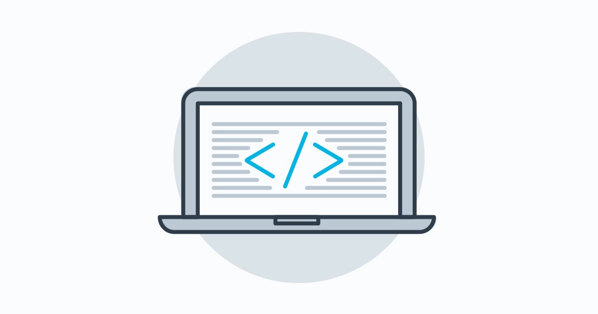

Tentang

Front end developer adalah pengembang website yang menggunakan baris kode HTML, CSS, dan JavaScript untuk menghasilkan website dengan tampilan yang menarik.
Mereka adalah orang-orang yang mengolah desain murni menjadi website yang interaktif dengan pengguna.
Pengembangan website biasanya terdiri dari 3 bagian utama yaitu UI/UX designer, front end developer, dan back end developer. Ketiga bagian ini bekerja sama untuk membangun website yang menarik dan andal.
Setelah desainer memberikan gambaran dan menuangkan ide ke dalam sebuah gambar berupa tampilan dan layout, front end developer menggunakan gambar yang dibuat oleh desainer sebagai panduan untuk membuat website.
Tampilan yang terlihat di browser atau aplikasi, animasi, sampai dengan menu yang muncul ketika disentuh kursor adalah hasil kerja dari seorang front end developer.
Selain itu, front end developer bertanggung jawab untuk memproses seluruh kode yang berasal dari server ke server.
Keterampilan

Untuk mendapatkan pekerjaan/profesi tertentu pasti kita membutuhkan keterampilan tertentu, begitupun jika Anda ingin menjadi seorang Front-End Developer.
Berikut beberapa skill yang harus dimiliki Front-End Developer yang diambil dari Skillcrush.
1. HTML dan CSS
Untuk yang sudah kuliah Jurusan Informatika atau SMK TKJ, pasti sudah tidak asing lagi dengan HTML dan CSS.
HTML (HyperText Markup Language) adalah bahasa markup yang digunakan untuk membuat halaman website. HTML menjadi bahasa paling dasar untuk mengembangakan website.
Sedangkan CSS (Cascading Style Sheets) adalah bahasa pemrograman yang mendukung HTML untuk bekerja. Jika HTML berfungsi sebagai pondasi atau bangunan dari website, CSS berfungsi untuk mengatur layout, warna, font, dan style lain.
2. JavaScript
JavaScript adalah salah satu tools dasar untuk front end developer. Dengan JavaScrip, Anda dapat menentukan fungsi-fungsi yang ada di dalam website, seperti menambahkan audio, video, game, dan animasi.
3. Framework CSS dan JavaScript
Supaya JavaScript bekerja secara maksimal, Anda membutuhkan ekstensi tambahan yang biasa disebut sebagai framework. Framework CSS dan JavaScript adalah koleksi dari file CSS atau JavaScript yang bertugas untuk menggabungkan berbagai fungsi menjadi lebih sederhana (common functionality).
Ada banyak framework JavaScript yang mempunyai fungsi masing-masing, seperti jQuery, Angular, dan Vue. Sedangkan framework CSS yang bisa Anda manfaatkan seperti Bootstrap, Bulma, dan Foundation.
Meskipun ada beberapa framework berbeda, Anda tinggal memilih salah satu karena fungsinya hampir sama. Tiap framework memiliki kelemahan dan kelebihan masing-masing. Jadi sangat penting untuk memilih framework yang sesuai dengan kebutuhan dan tipe website yang akan dibuat.
4. Preprocessor CSS
CSS murni tidak bisa mendefinisikan variabel, fungsi, atau operasi aritmatika. Supaya CSS dapat melakukan berbagai hal ini, maka dibutuhkan Preprocessor CSS.
Preprocessor CSS adalah framework yang menyediakan fitur-fitur yang tidak terdapat pada CSS. Fitur tersebut banyak mengadopsi konsep-konsep pemrograman seperti operasi matematika dasar, variabel, loop, dan fungsi.
Contoh Preprocessor CSS adalah SASS, LESS dan Stylus.
5. Version Control System (Git)
Git adalah aplikasi pengontrol versi atau biasa disebut dengan VCS (Version Control System) saat ini sangat banyak digunakan oleh para developer untuk membuat aplikasi dan sistem. Karenanya, tidak mengherankan jika saat ini Git tutorial menjadi kata kunci yang sering ditanyakan pada mesin pencari.
Git diciptakan oleh Linux Trovalds yang juga perintis kernel sistem operasi Linux. Git saat ini menjadi VCS yang paling besar di seluruh dunia, dibarengi dengan semakin banyaknya perusahaan besar menggunakan Git sebagai aplikasi pengontrol versinya.
6. Responsive & Mobile Design
Berbagai macam perangkat dengan berbagai macam spesifikasi yang saat ini tersedia, mendorong pengembang bisa menyesuaikan tampilan website di semua perangkat. Pengembang website biasanya menyelesaikan masalah ini dengan responsive design. Memahami prinsip-prinsip responsive design dan bagaimana mengimplementasikannya saat coding merupakan salah satu kunci menjadi front-end developer.
7. Testing/Debugging
Aktivitas yang harus dilakukan sebagai bagian dari proses pengembangan website adalah testing. Tujuan dari testing adalah mencari sebanyak-banyaknya error dan kesalahan pada sistem. Namun idealnya proses testing dilakukan oleh tester bukan front end developer. Meskipun begitu, tidak ada salahnya jika seorang front end developer juga memahami proses testing.
Front end developer biasanya menggunakan istilah debugging untuk seorang programmer yang melakukan testing kemudian memperbaikinya. Karena proses perbaikan program dan pencarian kesalahan dilakukan sendiri oleh programmer atau front end developer, tidak jarang proses ini membutuhkan waktu yang lama jika tidak menggunakan manajemen yang baik.
8. Browser Developer Tools
Mengakses website harus menggunakan browser. Jadi penting untuk memastikan website dapat diakses dengan baik melalui browser. Tampilan harus sesuai –tidak acak-acakan– dan semua fungsionalitas dapat berjalan dengan baik.
Di dalam web browser modern terdapat tools yang membantu front end developer untuk memastikan website tidak muncul masalah ketika diakses pengguna. Tool ini akan membantu Anda untuk melakukan pengecekan sampai dengan tidak ada masalah yang muncul ketika website diakses oleh pengguna melalui browser.
9. Membangun dan Mengoptimalisasi Tools/Website
Salah satu indikator website yang baik adalah dapat diakses dengan cepat. Website yang mempunyai akses yang lambat dan cenderung berat memberikan kesan yang kurang menarik. Untuk itu sangat perlu memastikan website dapat berjalan dengan ringan dan cepat.
Hal yang perlu diperhatikan supaya website dapat bekerja dengan ringan dan cepat adalah memastikan baris kode yang digunakan efisien. Baris kode HTML, CSS, dan JavaScript jika tidak dimaksimalkan dapat mengakibatkan performa website buruk.
Maka dari itu penting untuk menguasai cara mengoptimalisasi website. Anda dapat menggunakan program seperti Grunt dan Gulp untuk membantu Anda memaksimalkan kinerja website.
10. Command Line
Tidak semua tools atau aplikasi front end developer menggunakan tampilan (GUI). Aplikasi yang menggunakan GUI biasanya fungsionalitasnya juga terbatas sehingga membuat pengembang tidak dapat menggunakan aplikasi tersebut dengan maksimal. Maka dari itu, Anda membutuhkan skill pemahaman command line.
Anda butuh membuka terminal atau aplikasi bash yang mempunyai fitur lebih fleksibel dibandingkan dengan GUI. Anda hanya perlu menghafalkan beberapa perintah agar lancar menggunakan command line.